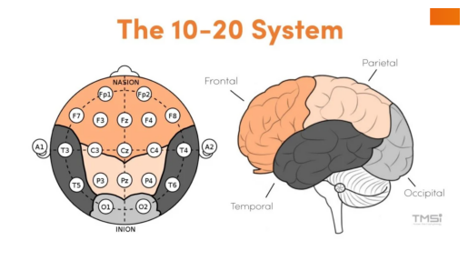
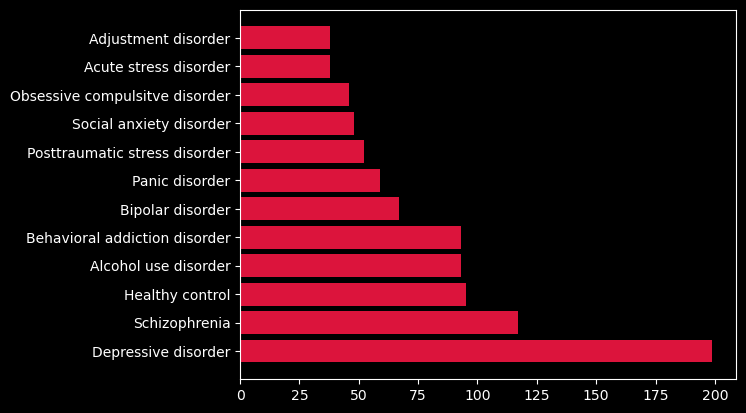
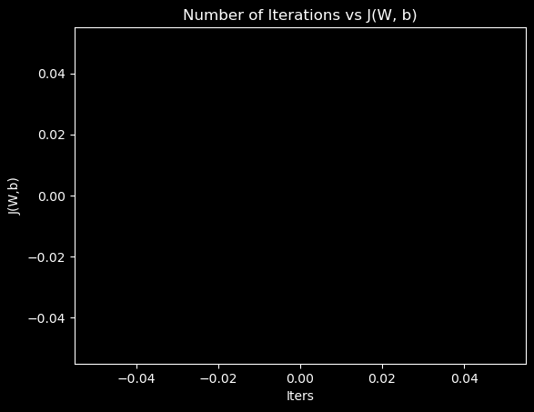

import pandas as pd
import numpy as np
import matplotlib.pyplot as plt
import matplotlib.image as mpimg
plt.style.available
plt.style.use('dark_background')Exploratory Data Analysis for EEG Psychiatric Disorders Data Set
Found on kaggle.com here
Useful notes on the data set content can be found here
eeg = pd.read_csv(r"C:\Users\Daniel Noone\Documents\Python Scripts\ML\EEG.machinelearing_data_BRMH.csv\EEG.machinelearing_data_BRMH.csv")
eeg| no. | sex | age | eeg.date | education | IQ | main.disorder | specific.disorder | AB.A.delta.a.FP1 | AB.A.delta.b.FP2 | ... | COH.F.gamma.o.Pz.p.P4 | COH.F.gamma.o.Pz.q.T6 | COH.F.gamma.o.Pz.r.O1 | COH.F.gamma.o.Pz.s.O2 | COH.F.gamma.p.P4.q.T6 | COH.F.gamma.p.P4.r.O1 | COH.F.gamma.p.P4.s.O2 | COH.F.gamma.q.T6.r.O1 | COH.F.gamma.q.T6.s.O2 | COH.F.gamma.r.O1.s.O2 | |
|---|---|---|---|---|---|---|---|---|---|---|---|---|---|---|---|---|---|---|---|---|---|
| 0 | 1 | M | 57.0 | 2012.8.30 | NaN | NaN | Addictive disorder | Alcohol use disorder | 35.998557 | 21.717375 | ... | 55.989192 | 16.739679 | 23.452271 | 45.678820 | 30.167520 | 16.918761 | 48.850427 | 9.422630 | 34.507082 | 28.613029 |
| 1 | 2 | M | 37.0 | 2012.9.6 | 6.0 | 120.0 | Addictive disorder | Alcohol use disorder | 13.425118 | 11.002916 | ... | 45.595619 | 17.510824 | 26.777368 | 28.201062 | 57.108861 | 32.375401 | 60.351749 | 13.900981 | 57.831848 | 43.463261 |
| 2 | 3 | M | 32.0 | 2012.9.10 | 16.0 | 113.0 | Addictive disorder | Alcohol use disorder | 29.941780 | 27.544684 | ... | 99.475453 | 70.654171 | 39.131547 | 69.920996 | 71.063644 | 38.534505 | 69.908764 | 27.180532 | 64.803155 | 31.485799 |
| 3 | 4 | M | 35.0 | 2012.10.8 | 18.0 | 126.0 | Addictive disorder | Alcohol use disorder | 21.496226 | 21.846832 | ... | 59.986561 | 63.822201 | 36.478254 | 47.117006 | 84.658376 | 24.724096 | 50.299349 | 35.319695 | 79.822944 | 41.141873 |
| 4 | 5 | M | 36.0 | 2012.10.18 | 16.0 | 112.0 | Addictive disorder | Alcohol use disorder | 37.775667 | 33.607679 | ... | 61.462720 | 59.166097 | 51.465531 | 58.635415 | 80.685608 | 62.138436 | 75.888749 | 61.003944 | 87.455509 | 70.531662 |
| ... | ... | ... | ... | ... | ... | ... | ... | ... | ... | ... | ... | ... | ... | ... | ... | ... | ... | ... | ... | ... | ... |
| 940 | 941 | M | 22.0 | 2014.8.28 | 13.0 | 116.0 | Healthy control | Healthy control | 41.851823 | 36.771496 | ... | 82.905657 | 34.850706 | 63.970519 | 63.982003 | 51.244725 | 62.203684 | 62.062237 | 31.013031 | 31.183413 | 98.325230 |
| 941 | 942 | M | 26.0 | 2014.9.19 | 13.0 | 118.0 | Healthy control | Healthy control | 18.986856 | 19.401387 | ... | 65.917918 | 66.700117 | 44.756285 | 49.787513 | 98.905995 | 54.021304 | 93.902401 | 52.740396 | 92.807331 | 56.320868 |
| 942 | 943 | M | 26.0 | 2014.9.27 | 16.0 | 113.0 | Healthy control | Healthy control | 28.781317 | 32.369230 | ... | 61.040959 | 27.632209 | 45.552852 | 33.638817 | 46.690983 | 19.382928 | 41.050717 | 7.045821 | 41.962451 | 19.092111 |
| 943 | 944 | M | 24.0 | 2014.9.20 | 13.0 | 107.0 | Healthy control | Healthy control | 19.929100 | 25.196375 | ... | 99.113664 | 48.328934 | 41.248470 | 28.192238 | 48.665743 | 42.007147 | 28.735945 | 27.176500 | 27.529522 | 20.028446 |
| 944 | 945 | M | 21.0 | 2015.10.23 | 13.0 | 105.0 | Healthy control | Healthy control | 65.195346 | 69.241972 | ... | 78.600293 | 68.255430 | 70.687410 | 74.433908 | 74.294750 | 53.254681 | 72.755265 | 47.810386 | 80.166825 | 64.380273 |
945 rows × 1149 columns
img = mpimg.imread(r"C:\Users\Daniel Noone\OneDrive\Documents\dan-noone.github.io\img\eeg_10_20_montage.png")
plt.imshow(img)
plt.axis('off')
plt.show()
eeg_count = eeg['specific.disorder'].value_counts()
eeg_count = eeg_count.to_frame()
eeg_count.reset_index(inplace = True)
eeg_count
plt.barh(eeg_count['specific.disorder'], eeg_count['count'], color = 'crimson')
plt.show()
Multivariate Logistic Regression Model Formulation for Binary Classification
A Multivariate Logistic Regression Model will be formulated for the purpose of predicting whether or not an individual should be diagnosed with Schizophrenia (P(y = 1 | parameters, x)) or not (P(y = 0 | parameters, x)) > this model is to use sex, age, education score, IQ score, and EEG Recording data utilizing the 10-20 montage electrode placement system > > 19 electrodes (6 freq bands per electrode), along with coherency (COH) measures between each pair of electrodes for each freq band > > > 114 (19 * 6) power spectrum density (AB) measurements, 1026 ((19(19-1)/2) * 6) coherency (COH) measures
# Prepping data to train model
label = []
for i in eeg['specific.disorder']:
if i == 'Schizophrenia':
label.append(1)
else:
label.append(0)
label = np.array(label)
sex = []
for i in eeg['sex']:
if i == 'M':
sex.append(1) # = 1 if sex = M (male)
else:
sex.append(0)
sex = pd.DataFrame(sex)
eeg_a = eeg.iloc[:,2]
eeg_b = eeg.iloc[:,4:6]
eeg_c = eeg.iloc[:,8:]
eeg_reg = pd.concat([eeg_a, eeg_b, eeg_c],axis = 1)
eeg_reg = eeg_reg.fillna(eeg_reg.mean())
# Normalizing the training features for scaling purposes
def norm(df, cols):
norm_df = df.copy()
for i in cols:
norm_df[f'{i}'] = (df[f'{i}'] - df[f'{i}'].mean()) / df[f'{i}'].std()
return norm_df
eeg_norm = norm(eeg_reg, eeg_reg.columns)
# Converting using np.array()
X = np.array(eeg_norm)
y = label
print(f"X is a 2D matrix with shape{X.shape}, y is a 1D array with shape{y.shape}")X is a 2D matrix with shape(945, 1144), y is a 1D array with shape(945,)# Defining functions to be used:
def sigmoid(z):
g = 1 / (1 + np.exp(-z))
return g
def log_reg(sigmoid, X, W, b):
z = np.dot(X,W) + b
fwb = sigmoid(z)
return fwb
def cost_compute(sigmoid, log_reg, X, y, W, b, epsilon):
m,n = X.shape
fwb = log_reg(sigmoid, X, W, b)
fwb = np.clip(fwb, epsilon, 1 - epsilon) #avoid log(0) errors
loss = -(y * np.log(fwb) + (1 - y) * np.log(1 - fwb))
cost = np.sum(loss) / m
return cost
def grad_desc(sigmoid, cost_compute, X, y, W, b, epsilon, alpha, iters, thresh):
m,n = X.shape
prev_cost = float('inf')
j_hist = []
iters_hist = []
for i in range(int(iters)):
fwb = sigmoid(np.dot(X,W) + b)
dw = np.dot(X.T, (fwb - y)) / m
db = (np.sum((fwb - y) / m))
W -= dw * alpha
b -= db * alpha
cost = cost_compute(sigmoid, log_reg, X, y, W, b, epsilon)
j_hist.append(cost)
iters_hist.append(i)
#if np.abs(cost - prev_cost) < thresh:
#break
prev_cost = cost
return W, b, j_hist, iters_hist
# Training the model with gradient desc:
W = np.zeros(X.shape[1])
b = 0
alpha = 0.001
iters = 10000
epsilon = 1e-15
thresh = 1e-5
W, b, j, iter_ = grad_desc(sigmoid, cost_compute, X, y, W, b, epsilon, alpha, iters, thresh)array([nan, nan, nan, ..., nan, nan, nan])X.shape
W.shape
fwb = sigmoid(np.dot(X,W) + b)
fwb.shape
dw = np.dot(X.T, (fwb - y)) / m
dw.shape
#(945,1144) --> (1144, 945) * (1144,)print(fwb.shape,y.shape)(945,) (945,)plt.plot(iter_, j, color = 'red')
plt.title('Number of Iterations vs J(W, b)')
plt.xlabel('Iters')
plt.ylabel('J(W,b)')
plt.show()